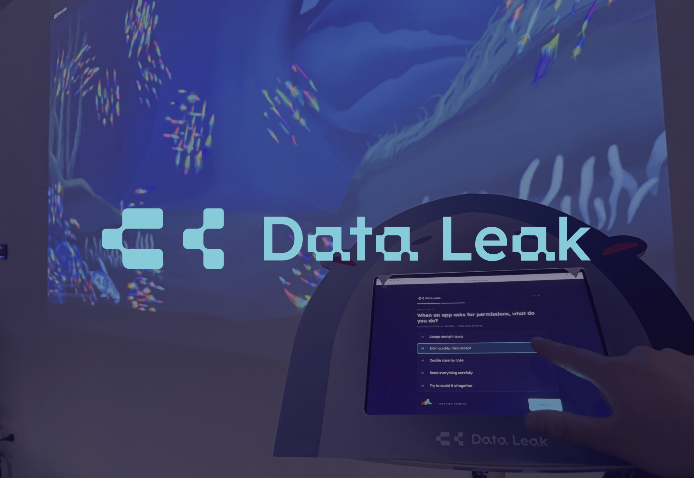
Visualising personal data through an interactive ocean of digital fish.
Context
People regularly input personal information online without fully considering its permanence or where it travels after pressing 'submit'. As digital platforms become more integrated into everyday life, the movement and storage of personal data often remains invisible.
Through Data Leak, we aimed to increase awareness of online behaviour and help users understand how their data exists within digital systems through an interactive experience and data visualisation.
Challenge
Propose a design-led response that investigates a specific problem within the digital legacy space. Through research, identify a clear context and audience, and explore how design can make these systems more humane, accessible, ethical, or culturally responsive.
Approach
Visualising data as fish swimming through an ocean of unseen digital systems. We explored how personal data could be translated into visual forms, allowing users to create unique fish that get uploaded into a shared tank. This helps to communicate the idea of data permanence and how information continues to exist once it enters digital spaces.
Outcome
An interactive installation that allowed users to generate digital fish based on their answers in a survey. These fish are added to a shared virtual tank, creating a growing ocean that represented the visibility of data within digital systems.
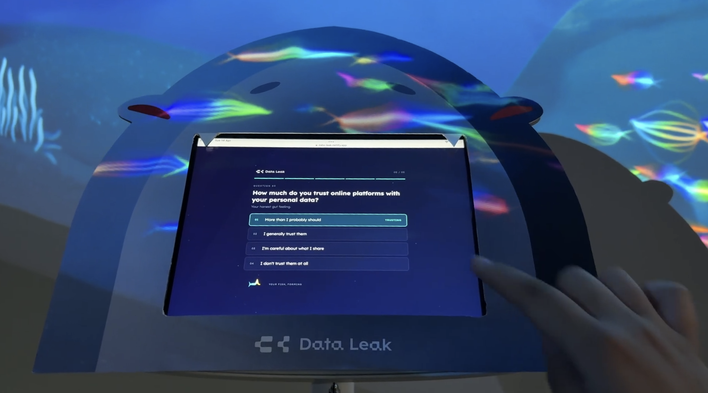

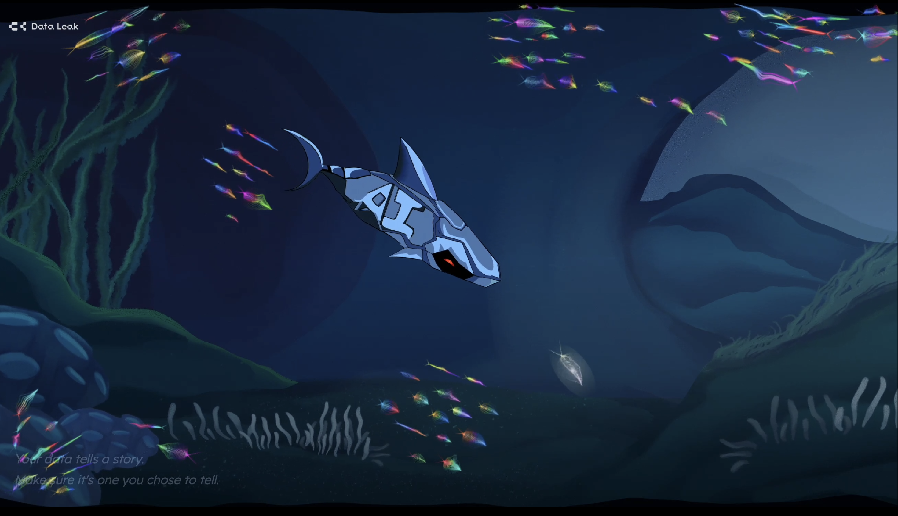
Research & Insights
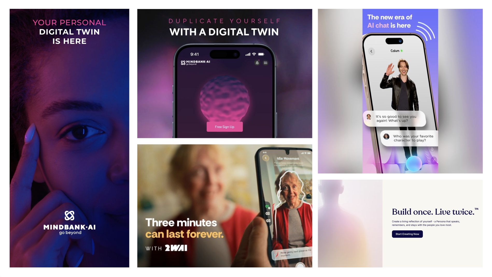
We were initially drawn to the emergence of AI-driven apps designed to 'preserve' people digitally, and indefinitely. We found this concept unsettling, which led us to explore how we could raise awareness and encourage people to be more mindful when inputting personal data.
From online research as well as interviews we conducted, we found a gap in how people respond to AI. Although many often expressed distrust toward AI systems, most still continued to use these tools without much consideration. We also noticed that personal data is often shared into these tools and systems with little consideration of how it will be stored or processed.
Inspiration
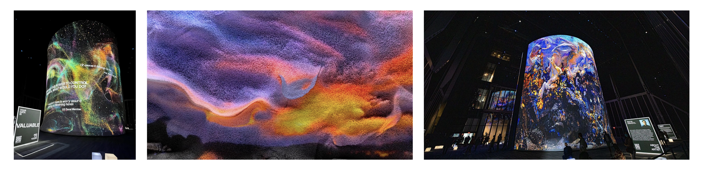
I researched the 'Project Liberty Experience', looking at the installations use of data visualisation, and the emotional response it created for the viewers. Although data in digital systems is often seen as overwhelming or intimidating, Refik Anadol's installation demonstrated how immersive visualisation can evoke curiosity, wonder, and optimism. This inspired us to explore how we could reframe data as something more approachable, and less intimidating.
During concept ideation, our Interactive team member, Danett, brought up idea of participatory aquarium experiences where participants draw a fish, and upload it into a shared digital tank. We were inspired by interactivity of this concept and explored how it could be developing into a more engaging experience for our audience.
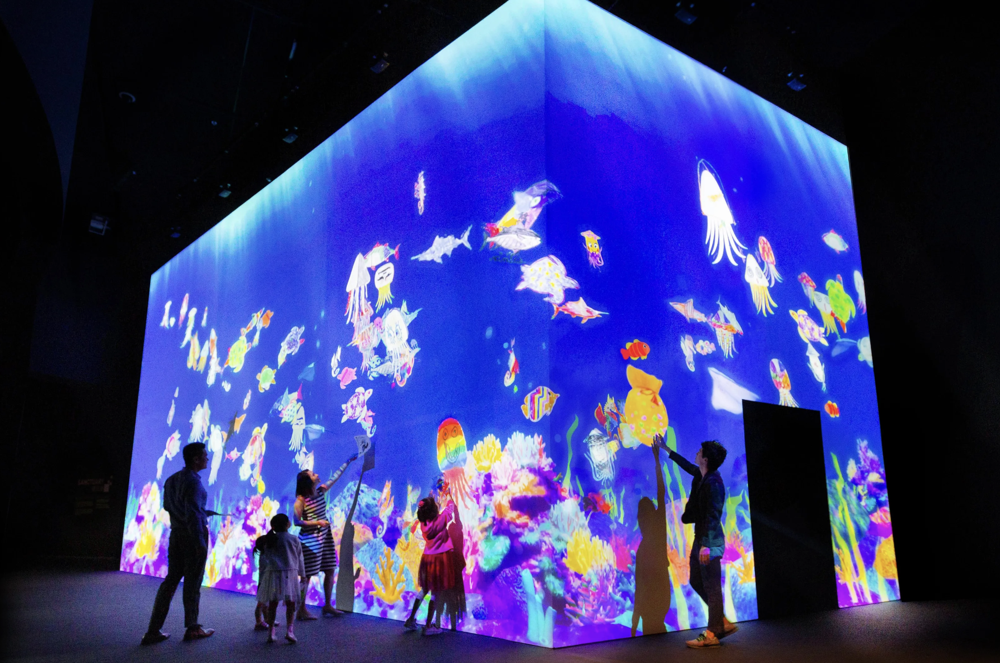
Creative Idea
The concept we developed was a large ocean-like digital tank where each fish represents a persons data, visualising the permanence of information and how it moves through often hidden digital systems. We used the metaphor of fish and the ocean to make the concept more approachable, and easier for audiences to understand, translating an abstract topic into a familiar and visually engaging experience.
For the setting, we envisioned the installation at Silo Park in Auckland, placing the audience in a tank-like environment. The projection would surround the audience, immersing them in a representation of a digital ecosystem.
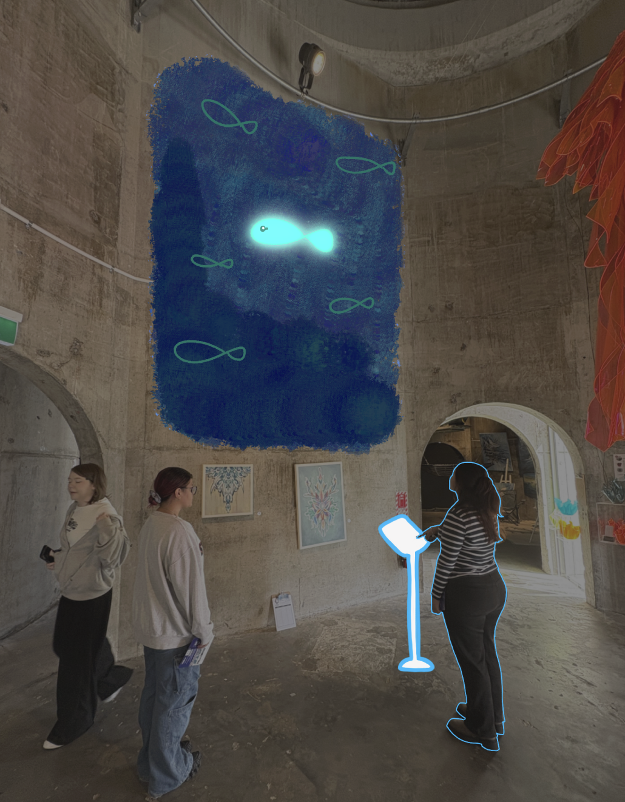
User Journey and Touchpoints
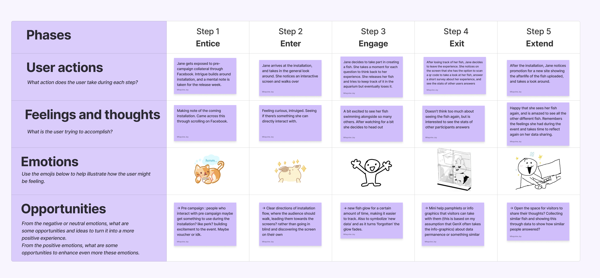
I developed the user journey, mapping how users would discover, engage with, and move through the campaign experience, considering how each touchpoint would contribute to the overall interaction flow.
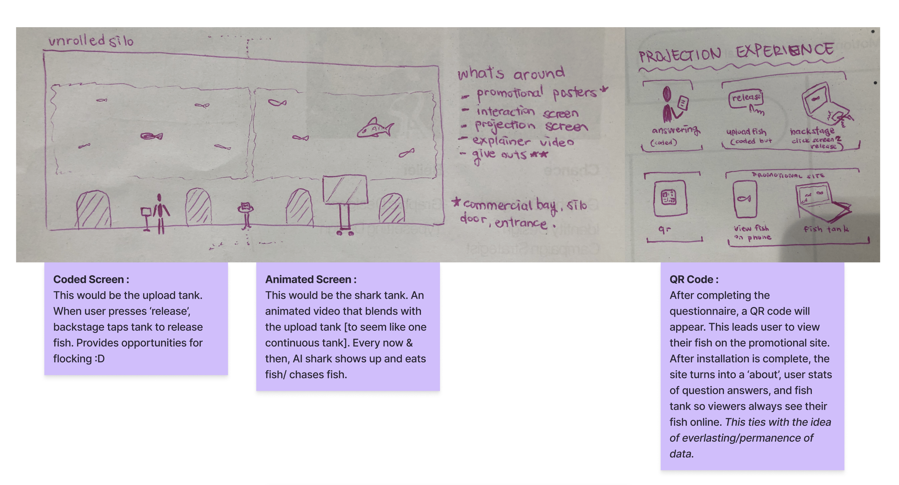
I then planned out how the installation would look in Silo Park, mapping out the layout, placement of key elements (such as the survey screen, explainer video, contextual poster), and overall user experience.
To extend the interaction beyond the physical installation, we created a QR code that would direct users to a website version of the tank. There, participants could revisit their fish and see it exist alongside others in a shared digital ecosystem.
Prototypes and User Testing
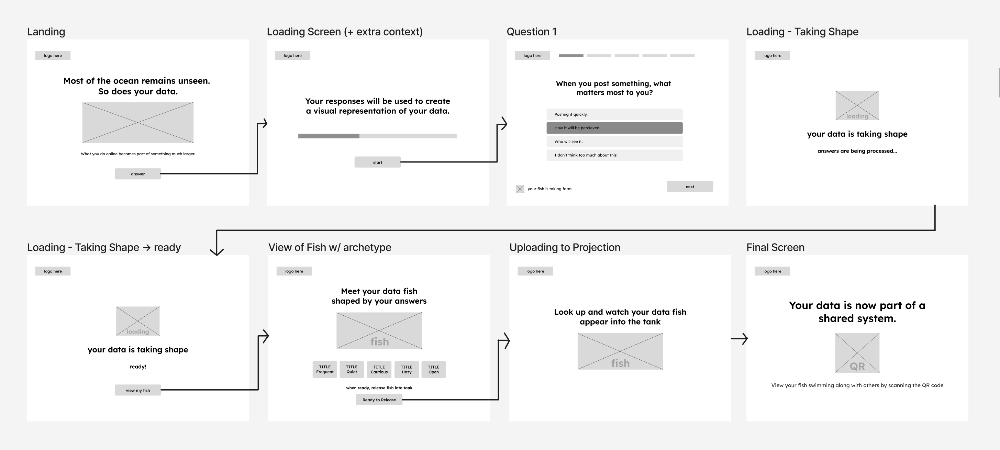
To upload their fish to the tank, participants completed a short survey that generated a unique fish based on their response. The fish was then added to the project tank, becoming part of the larger digital ecosystem.
Working alongside Danett, I helped develop the interaction flow and screen progression for this experience. We added a personality-based archetype system where each participant recieved a fish type based on their responses. This added a layer of personalisation to the fish.
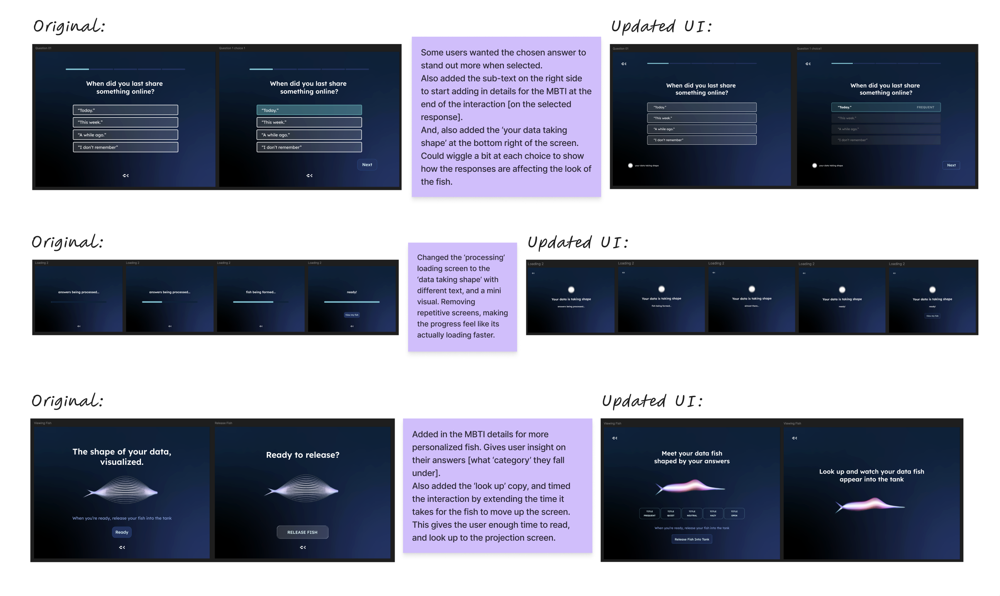
Through user testing, we found that participants felt that the concept was not being explained clearly enough. In response, I refined the copy, and updated the UI to improve overall understanding and guide the users through the experience.
Advanced Prototyping
We tested the entire visual interaction by projected the digital tank and walking through the user touchpoints.
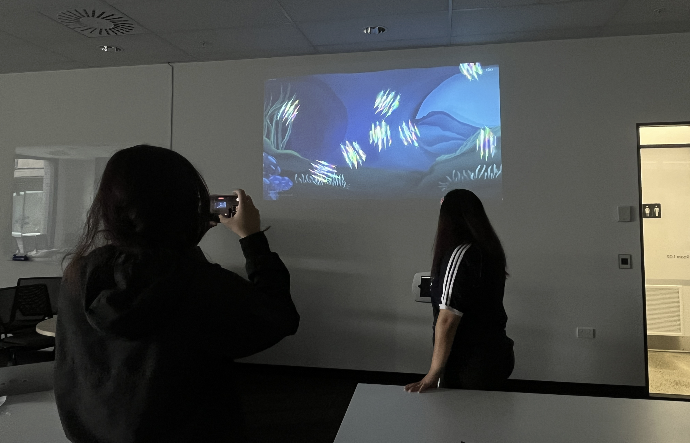
I created a 3D model in Spline to visualise the installation layout, including where each elements (such as the survey screen, explainer video TV, projection) would be placed to help us better understand the experience and how users would move through the space.
Final outcome
The final outcome is an interactive data visualisation installation that translates personal data into a visual experience. It allows participants to engage with their own data in a visual form, making the presence, movement, and permanence of information within digital systems more visible and understandable.
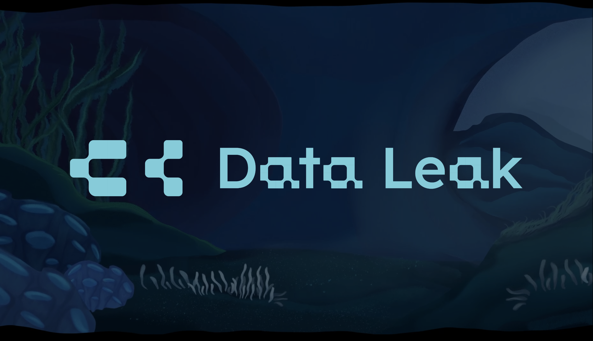
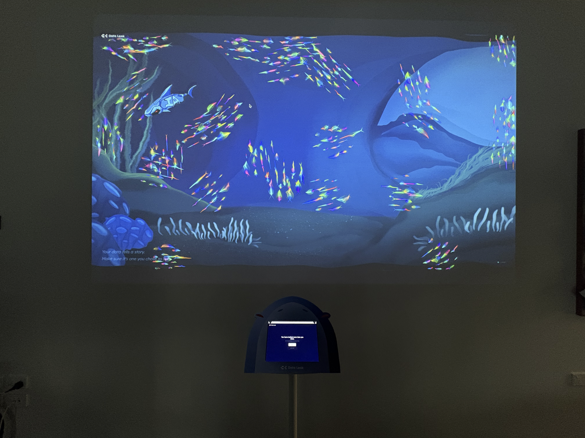
Reflection
Through this project, I developed my skills in 3D visualisation and advanced prototyping which helped me to better understand and refine the user journey. The many rounds of user testing guiding the continuous iterations made me more aware of the importance of clarity in communicating both the concept and interaction, in order to create a clear and intuitive user experience.